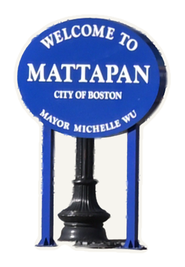
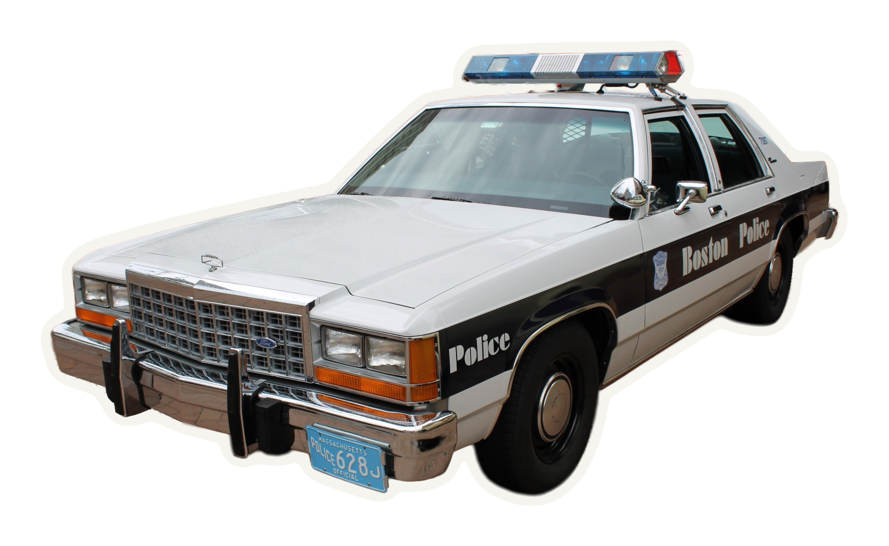

Апелляционный суд США, 1-й округ · 2005
ночь, январь
Бостон · 25 января 1995

мигалка, ночь
≈ 2:00 ночи

ночная дорога
сетчатый забор

решение апелляционного суда, 2005 · 415 F.3d 183
«не видел»

решение апелляционного суда, 2005 · 415 F.3d 183
фонарь в темноте

Федеральный суд, Бостон · фото 2024 · Wikimedia Commons
34
месяца тюрьмы
Бостон
дождь, ночь
удобная
ложь?
ложь?
2011

Юнион-колледж · Wikimedia Commons

news.illinois.edu · 9 июня 2011
ночь, фонари

суд, Бостон · Wikimedia Commons
что мы видим

Science News · 2011

Simons & Levin, 1998
Полицейский, который «не видел»
Dark Mode Labразум · пролог